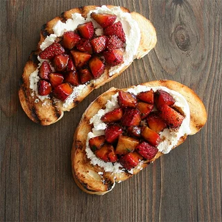

Strawberry and Goat Cheese Bruschetta

A simple and delicious appetizer!
This dish is a perfect appetizer that is incredibly easy to pull off, while also being incredibly impressive!
Ingredients
- 16 oz Strawberries washed and diced
- 1 cup of Goat Cheese, room temperature
- 1 Half cup balsamic vinegar
- 12 slices Italian bread
- 1 tablespoon oilive oil
- 2 teaspons fresh thyme leaves
- salt and ground pepper
Directions
- Heat vinegar in a small skillet over medium-low heat. Simmer until reduced by about half, 8 to 10 minutes. Remove from heat and allow to cool to room temperature.
- Prepare a grill for high heat. Place bread slices on a foil-lined baking sheet and drizzle with olive oil. (A skillet will work fine for this as well if you do not have a grill)
- Combine strawberries and thyme in a small bowl and set aside.
- Grill bread on the preheated grill or skillet until browned, about 3 minutes per side.
- Spread goat cheese on toasted bread. Add black pepper, salt, and reduced vinegar to the strawberry mixture. Spoon over the goat cheese topped bruschetta. Garnish with additional thyme
Voila! You now have a delicious appetizer to impress your guests with! This dish can also serve as a desert of sorts as well, just reduce the amount of vinegar used with the strawberries!